5.2 The Unit Circle
In section 5.1, we introduced circular motion and derived a formula which describes the linear velocity of an object moving on a circular path at a constant angular velocity. One of the goals of this section is describe the position of such an object. To that end, consider an angle \(\theta\) in standard position and let \(P\) denote the point where the terminal side of \(\theta\) intersects the Unit Circle. By associating the point \(P\) with the angle \(\theta\), we are assigning a position on the Unit Circle to the angle \(\theta\). The \(x\)-coordinate of \(P\) is called the cosine of \(\theta\), written \(\cos(\theta)\), while the \(y\)-coordinate of \(P\) is called the sine of \(\theta\), written \(\sin(\theta)\).
Example
Find the cosine and sine of the following angles.
- \(\theta = 270^{\circ}\)
- \(\theta = - \pi\)
- \(\theta = 45^{\circ}\)
- \(\theta = \frac{\pi}{6}\)
- \(\theta = 60^{\circ}\)
Solution
-
To find \(\cos\left(270^{\circ}\right)\) and \(\sin\left(270^{\circ}\right)\), we plot the angle \(\theta =270^{\circ}\) in standard position and find the point on the terminal side of \(\theta\) which lies on the Unit Circle. Since \(270^{\circ}\) represents \(\frac{3}{4}\) of a counter-clockwise revolution, the terminal side of \(\theta\) lies along the negative \(y\)-axis. Hence, the point we seek is \((0,-1)\) so that \(\cos\left(\frac{3 \pi}{2}\right) = 0\) and \(\sin\left(\frac{3 \pi}{2}\right) = -1\).
-
The angle \(\theta=-\pi\) represents one half of a clockwise revolution so its terminal side lies on the negative \(x\)-axis. The point on the Unit Circle that lies on the negative \(x\)-axis is \((-1,0)\) which means \(\cos(-\pi) = -1\) and \(\sin(-\pi) = 0\).
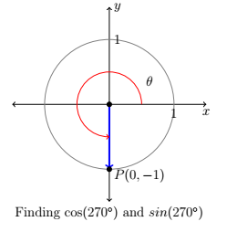
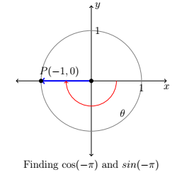
-
When we sketch \(\theta = 45^{\circ}\) in standard position, we see that its terminal does not lie along any of the coordinate axes which makes our job of finding the cosine and sine values a bit more difficult. Let \(P(x,y)\) denote the point on the terminal side of \(\theta\) which lies on the Unit Circle. By definition, \(x = \cos\left(45^{\circ}\right)\) and \(y = \sin\left(45^{\circ}\right)\). If we drop a perpendicular line segment from \(P\) to the \(x\)-axis, we obtain a \(45^{\circ} - 45^{\circ} - 90^{\circ}\) right triangle whose legs have lengths \(x\) and \(y\) units. From Geometry, we get \(y=x\). Since \(P(x,y)\) lies on the Unit Circle, we have \(x^2+y^2 = 1\). Substituting \(y=x\) into this equation yields \(2x^2 = 1\), or \(x =\pm \sqrt{\frac{1}{2}} = \pm \frac{\sqrt{2}}{2}\). Since \(P(x,y)\) lies in the first quadrant, \(x>0\), so \(x = \cos\left(45^{\circ}\right) = \frac{\sqrt{2}}{2}\) and with \(y=x\) we have \(y = \sin\left(45^{\circ}\right) = \frac{\sqrt{2}}{2}\).
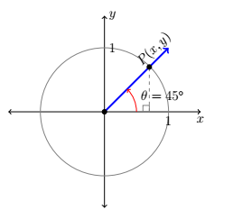
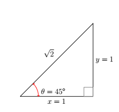
-
As before, the terminal side of \(\theta = \frac{\pi}{6}\) does not lie on any of the coordinate axes, so we proceed using a triangle approach. Letting \(P(x,y)\) denote the point on the terminal side of \(\theta\) which lies on the Unit Circle, we drop a perpendicular line segment from \(P\) to the \(x\)-axis to form a \(30^{\circ} - 60^{\circ} - 90^{\circ}\) right triangle. After a bit of Geometry we find \(y = \frac{1}{2}\) so \(\sin\left(\frac{\pi}{6}\right) = \frac{1}{2}\). Since \(P(x,y)\) lies on the Unit Circle, we substitute \(y = \frac{1}{2}\) into \(x^2 + y^2 = 1\) to get \(x^{2} = \frac{3}{4}\), or \(x = \pm \frac{\sqrt{3}}{2}\). Here, \(x > 0\) so \(x = \cos\left(\frac{\pi}{6}\right) = \frac{\sqrt{3}}{2}\).
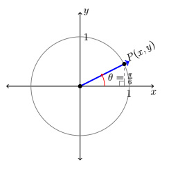
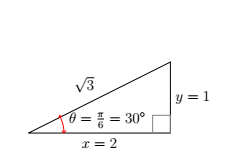
-
Plotting \(\theta = 60^{\circ}\) in standard position, we find it is not a quadrantal angle and set about using a triangle approach. Once again, we get a \(30^{\circ} - 60^{\circ} - 90^{\circ}\) right triangle and, after the usual computations, find \(x = \cos\left(60^{\circ}\right) = \frac{1}{2}\) and \(y = \sin\left(60^{\circ}\right) = \frac{\sqrt{3}}{2}\).
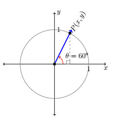
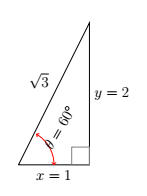
Another tool which helps immensely in determining cosines and sines of angles is the symmetry inherent in the Unit Circle. Suppose, for instance, we wish to know the cosine and sine of \(\theta = \frac{5 \pi}{6}\). We plot \(\theta\) in standard position below and, as usual, let \(P(x,y)\) denote the point on the terminal side of \(\theta\) which lies on the Unit Circle. Note that the terminal side of \(\theta\) lies \(\frac{\pi}{6}\) radians short of one half revolution.
In Example 4, we determined that \(\cos\left(\frac{\pi}{6}\right) = \frac{\sqrt{3}}{2}\) and \(\sin\left( \frac{\pi}{6} \right) = \frac{1}{2}\). This means that the point on the terminal side of the angle \(\frac{\pi}{6}\), when plotted in standard position, is \(\left(\frac{\sqrt{3}}{2}, \frac{1}{2}\right)\). From the figure below, it is clear that the point \(P(x,y)\) we seek can be obtained by reflecting that point about the \(y\)-axis. Hence, \(\cos\left(\frac{5\pi}{6}\right) = -\frac{\sqrt{3}}{2}\) and \(\sin\left( \frac{5\pi}{6} \right) = \frac{1}{2}\).
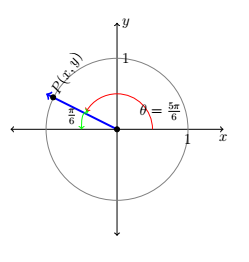
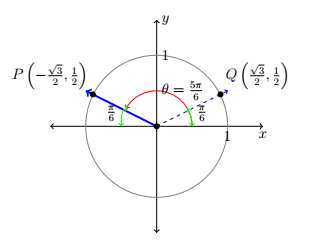
In the above scenario, the angle \(\frac{\pi}{6}\) is called the reference angle for the angle \(\frac{5 \pi}{6}\). In general, for a non-quadrantal angle \(\theta\), the reference angle for \(\theta\) (usually denoted \(\alpha\)) is the acute angle made between the terminal side of \(\theta\) and the \(x\)-axis. If \(\theta\) is a Quadrant I or IV angle, \(\alpha\) is the angle between the terminal side of \(\theta\) and the positive \(x\)-axis; if \(\theta\) is a Quadrant II or III angle, \(\alpha\) is the angle between the terminal side of \(\theta\) and the negative \(x\)-axis.
Allow \(P\) to denote the point \((\cos(\theta), \sin(\theta))\), then \(P\) lies on the Unit Circle. Since the Unit Circle possesses symmetry with respect to the \(x\)-axis, \(y\)-axis and origin, regardless of where the terminal side of \(\theta\) lies, there is a point \(Q\) symmetric with \(P\) which determines \(\theta\)'s reference angle, \(\alpha\) as seen below.
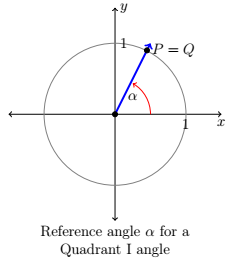
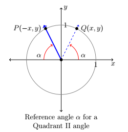
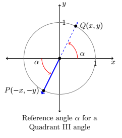
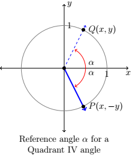
Reference Angle Theorem
Suppose \(\alpha\) is the reference angle for \(\theta\). Then \(\cos(\theta) = \pm \cos(\alpha)\) and \(\sin(\theta) = \pm \sin(\alpha)\), where the choice of the (\(\pm\)) depends on the quadrant in which the terminal side of \(\theta\) lies.
Earlier in this section we defined \(\cos(\theta)\) and \(\sin(\theta)\) for angles \(\theta\) using the coordinate value of points on the Unit Circle. As such, these functions earn the moniker circular functions. It turns out that cosine and sine are just two of the six commonly used circular functions which we define below.
Trigonometric Functions
Suppose \(\theta\) is an angle plotted in standard position and \(P(x,y)\) is the point on the terminal side of \(\theta\) which lies on the Unit Circle
- The sine of \(\theta\), denoted \(\sin(\theta)\), is defined by \(\sin(\theta)= y \).
- The cosine of \(\theta\), denoted \(\cos(\theta)\), is defined by \(\cos(\theta)= x \).
- The tangent of \(\theta\), denoted \(\tan(\theta)\), is defined by \(\tan(\theta)= \frac{y}{x}\), provided \(x\ne 0\).
- The cosecant of \(\theta\), denoted \(\csc(\theta)\), is defined by \(\csc(\theta)= \frac{1}{y}\), provided \(y\ne 0\).
- The secant of \(\theta\), denoted \(\sec(\theta)\), is defined by \(\sec(\theta)= \frac{1}{x}\), provided \(x\ne 0\).
- The cotangent of \(\theta\), denoted \(\cot(\theta)\), is defined by \(\cot(\theta)= \frac{x}{y}\), provided \(y\ne 0\).
Example
Identify the six trigonometric functions for the points below that fall on the unit circle.
- \(P\left(\frac{1}{2},\frac{\sqrt{3}}{2}\right)\)
Solution
-
It is important to note that since both coordinates are positive that suggest that our angle \(\theta\) would be in quadrant I. Using the definitions of each function above we'd find that:
\[\sin(\theta)=y=\frac{\sqrt{3}}{2}\]
\[\cos(\theta)=x=\frac{1}{2}\]
\[\tan(\theta)=\frac{y}{x}=\frac{\frac{\sqrt{3}}{2}}{\frac{1}{2}}\]
When it comes to doing the functions like csc, cot, and sec it is important to remember to rationalize the denominator if you're working with a value containing radicals.
\[\csc(\theta)=\frac{1}{y}=\frac{1}{\frac{\sqrt{3}}{2}}=\frac{2}{\sqrt{3}}\cdot {\color{red}}\frac{\sqrt{3}}{\sqrt{3}}\color{black}=\frac{2\sqrt{3}}{3}\]
\[\sec(\theta)=\frac{1}{x}=\frac{1}{\frac{1}{2}}=\frac{2}{1}=2\]
\[\cot(\theta)=\frac{x}{y}=\frac{\frac{1}{2}}{\frac{\sqrt{3}}{2}}=\frac{1}{\sqrt{3}}{\color{red}}\frac{\sqrt{3}}{\sqrt{3}}\color{black}=\frac{\sqrt{3}}{3}\]
In light of the Reference Angle Theorem, it pays to know the cosine and sine values for certain common angles. In the table below, we summarize the values which we consider essential and must be memorized.
| \(\theta\) (degrees) | \(\theta\) (radians) | \(\cos(\theta)\) | \(\sin(\theta)\) |
|---|---|---|---|
| \(0^{\circ}\) | \(0\) | \(1\) | \(0\) |
| \(30^{\circ}\) | \(\frac{\pi}{6}\) | \(\frac{\sqrt{3}}{2}\) | \(\frac{1}{2}\) |
| \(45^{\circ}\) | \(\frac{\pi}{4}\) | \(\frac{\sqrt{2}}{2}\) | \(\frac{\sqrt{2}}{2}\) |
| \(60^{\circ}\) | \(\frac{\pi}{3}\) | \(\frac{1}{2}\) | \(\frac{\sqrt{3}}{2}\) |
| \(90^{\circ}\) | \(\frac{\pi}{2}\) | \(0\) | \(1\) |
Example
Find the cosine and sine of the following angles.
- \(\theta = 225^{\circ}\)
- \(\theta = \frac{11 \pi}{6}\)
- \(\theta = -\frac{5 \pi}{4}\)
Solution
-
We begin by plotting \(\theta = 225^{\circ}\) in standard position and find its terminal side overshoots the negative \(x\)-axis to land in Quadrant III. Hence, we obtain \(\theta\)'s reference angle \(\alpha\) by subtracting: \(\alpha = \theta - 180^{\circ} = 225^{\circ} - 180^{\circ} = 45^{\circ}\). Since \(\theta\) is a Quadrant III angle, both \(\cos(\theta) < 0\) and \(\sin(\theta) < 0\). The Reference Angle Theorem yields: \(\cos\left(225^{\circ}\right) = -\cos\left(45^{\circ}\right) = -\frac{\sqrt{2}}{2}\) and \(\sin\left(225^{\circ}\right) = - \sin\left(45^{\circ}\right) = -\frac{\sqrt{2}}{2}\).
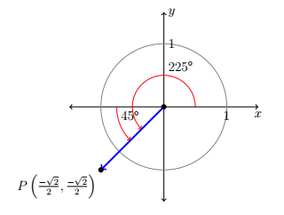
-
The terminal side of \(\theta = \frac{11\pi}{6}\), when plotted in standard position, lies in Quadrant IV, just shy of the positive \(x\)-axis. To find \(\theta\)'s reference angle \(\alpha\), we subtract: \(\alpha = 2\pi - \theta = 2\pi - \frac{11 \pi}{6} = \frac{\pi}{6}\). Since \(\theta\) is a Quadrant IV angle, \(\cos(\theta) > 0\) and \(\sin(\theta) < 0\), so the Reference Angle Theorem gives: \(\cos\left(\frac{11 \pi}{6} \right) = \cos\left(\frac{\pi}{6} \right) = \frac{\sqrt{3}}{2}\) and \(\sin\left(\frac{11\pi}{6}\right) = -\sin\left(\frac{\pi}{6}\right) = -\frac{1}{2}\).
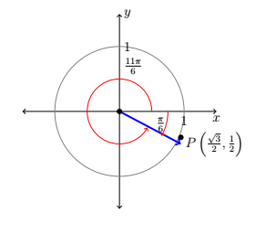
-
To plot \(\theta = -\frac{5\pi}{4}\), we rotate clockwise an angle of \(\frac{5 \pi}{4}\) from the positive \(x\)-axis. The terminal side of \(\theta\), therefore, lies in Quadrant II making an angle of \(\alpha = \frac{5 \pi}{4} - \pi = \frac{\pi}{4}\) radians with respect to the negative \(x\)-axis. Since \(\theta\) is a Quadrant II angle, the Reference Angle Theorem gives: \(\cos\left(-\frac{5 \pi}{4}\right) = -\cos\left(\frac{\pi}{4}\right) = -\frac{\sqrt{2}}{2}\) and \(\sin\left(-\frac{5 \pi}{4}\right) = \sin\left(\frac{\pi}{4}\right) = \frac{\sqrt{2}}{2}\).
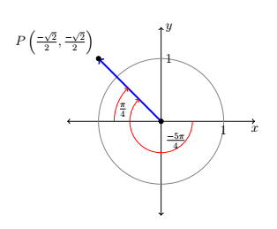
We can make an extension of this idea, by continuing the process through for the other four trigonometric functions, being sure to be careful in regards to the signs for each value.
Example
Find all six trigonometric functions given each of the angles below. Also identify the reference angle, and quadrant.
- \(\theta=\frac{\pi}{6}\)
- \(\theta=\frac{5\pi}{4}\)
- \(\theta=\frac{3\pi}{2}\)
Solution
-
For this first example our reference angle would just be the angle \(\theta\), since it falls in quadrant I. To find our six trigonometric functions we first need to recall that \(P\left(\frac{\sqrt{3}}{2},\frac{1}{2}\right)\) using that information we can find all six values.
\(\sin\left(\frac{\pi}{6}\right)=y=\frac{1}{2}\) \(\csc\left(\frac{\pi}{6}\right)=\frac{1}{y}=\frac{1}{\frac{1}{2}}=2\) \(\cos\left(\frac{\pi}{6}\right)=x=\frac{\sqrt{3}}{2}\) \(\sec\left(\frac{\pi}{6}\right)=\frac{1}{x}=\frac{1}{\frac{\sqrt{3}}{2}}=\frac{2\sqrt{3}}{3}\) \(\tan\left(\frac{\pi}{6}\right)=\frac{y}{x}=\frac{\frac{1}{2}}{\frac{\sqrt{3}}{2}}=\frac{\sqrt{3}}{3}\) \(\cot\left(\frac{\pi}{6}\right)=\frac{x}{y}=\frac{\frac{\sqrt{3}}{2}}{\frac{1}{2}}=\sqrt{3}\) -
First we need to identify that our reference angle would be \(\frac{\pi}{4}\), and our terminal side of our angle would be in quadrant III. This tells us the \(P\left(\frac{-\sqrt{2}}{2},\frac{-\sqrt{2}}{2}\right)\)
\(\sin\left(\frac{5\pi}{4}\right)=y=\frac{-\sqrt{2}}{2}\) \(\csc\left(\frac{5\pi}{4}\right)=\frac{1}{y}=\frac{1}{\frac{-\sqrt{2}}{2}}=-\sqrt{2}\) \(\cos\left(\frac{5\pi}{4}\right)=x=\frac{-\sqrt{2}}{2}\) \(\sec\left(\frac{5\pi}{4}\right)=\frac{1}{x}=\frac{1}{\frac{-\sqrt{2}}{2}}=-\sqrt{2}\) \(\tan\left(\frac{5\pi}{4}\right)=\frac{y}{x}=\frac{\frac{-\sqrt{2}}{2}}{\frac{-\sqrt{2}}{2}}=1\) \(\cot\left(\frac{5\pi}{4}\right)=\frac{x}{y}=\frac{\frac{-\sqrt{2}}{2}}{\frac{-\sqrt{2}}{2}}=1\) -
For the last example \(\theta\) is the negative portion of the \(y\)-axis. Meaning there is no reference angle and it isn't a quadrant it is the \(y\)-axis. Giving us the point \(P(0,-1)\) producing the following functions
\(\sin\left(\frac{3\pi}{2}\right)=y=-1\) \(\csc\left(\frac{3\pi}{2}\right)=\frac{1}{y}=\frac{1}{-1}=-1\) \(\cos\left(\frac{3\pi}{2}\right)=x=0\) \(\sec\left(\frac{3\pi}{2}\right)=\frac{1}{x}=\frac{1}{0}=\text{undefined}\) \(\tan\left(\frac{3\pi}{2}\right)=\frac{y}{x}=\frac{-1}{0}=\text{undefined}\) \(\cot\left(\frac{3\pi}{2}\right)=\frac{x}{y}=\frac{0}{-1}=0\)
When it comes to determining signs based on quadrants it is helpful to use an acronym or C.A.S.T, which is illustrated in the diagram below
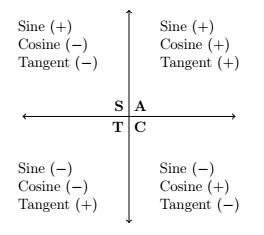
In the illustration we can place the letters from C.A.S.T in a counter-clockwise direction starting in Quadrant IV. It can be seen that in Quadrant I, the "A" stands for all trigonometric functions are positive. In Quadrant II, the "S" illustrates that the Sine function is the only one that is positive. Quadrant III, we can see that "T" represents that Tangent is the positive function while the others are negative, and lastly in Quadrant IV we can associate the "C" with Cosine being the positive function. Now, while we only illustrate this with our 3 basic trigonometric functions, the extensions can be made to the Cosecant, Secant, and Cotangent function as well.
Example
Find the six trigonometric functions for each of the following below
- \(\theta = \frac{\pi}{6}\) when \(\theta\) is in Quadrant II.
- \(\theta = \frac{\pi}{4}\) when \(\theta\) is in Quadrant III.
Solution
-
Since \(\theta = \frac{\pi}{6}\) we know that the point we need is \(P\left(\frac{\sqrt{3}}{2},\frac{1}{2}\right)\), and since we are in Quadrant II we know that Sine and Cosecant will be our only two positive functions giving us the following:
\(\sin(\theta)=y=\frac{1}{2}\) \(\csc(\theta)=\frac{1}{y}=\frac{1}{\frac{1}{2}}=2\) \(\cos(\theta)=x=\frac{-\sqrt{3}}{2}\) \(\sec(\theta)=\frac{1}{x}=\frac{1}{\frac{-\sqrt{3}}{2}}=\frac{-2\sqrt{3}}{3}\) \(\tan(\theta)=\frac{y}{x}=\frac{\frac{1}{2}}{\frac{-\sqrt{3}}{2}}=\frac{-\sqrt{3}}{3}\) \(\cot(\theta)=\frac{x}{y}=\frac{\frac{-\sqrt{3}}{2}}{\frac{1}{2}}=-\sqrt{3}\) -
Since \(\theta=\frac{\pi}{4}\) that means we are working with the point \(P\left(\frac{\sqrt{2}}{2},\frac{\sqrt{2}}{2}\right)\). Since we are in Quadrant III that means only Tangent and Cotangent are the positive functions and everything else is negative.
\(\sin(\theta)=y=\frac{-\sqrt{2}}{2}\) \(\csc(\theta)=\frac{1}{y}=\frac{1}{\frac{-\sqrt{2}}{2}}=-\sqrt{2}\) \(\cos(\theta)=x=\frac{-\sqrt{2}}{2}\) \(\sec(\theta)=\frac{1}{x}=\frac{1}{\frac{-\sqrt{2}}{2}}=-\sqrt{2}\) \(\tan(\theta)=\frac{y}{x}=\frac{\frac{-\sqrt{2}}{2}}{\frac{-\sqrt{2}}{2}}=1\) \(\cot(\theta)=\frac{x}{y}=\frac{\frac{-\sqrt{2}}{2}}{\frac{-\sqrt{2}}{2}}=1\)
By now you should start to put together the fact that we really only have three major points that repeat themselves around the unit circle. We have three main angles which are \(\frac{\pi}{3}\), \(\frac{\pi}{4}\), and \(\frac{\pi}{6}\). All of our other angles are just simply variations of those three. Using those three angles and our knowledge of C.A.S.T we can construct the entire unit circle as outlined below.

At this point it is important to note that the value of Sine and Cosine can never be larger than one or less than negative one. We call these two functions circular (cyclic) functions, because of the fact that their value will always fluctuate between negative one and positive one. This makes sense if you think about it. As you move around the unit circle neither the \(x\)-value(s) or \(y\)-value(s) are ever larger than one or less than negative one.
Beyond the Unit Circle
In Section unitcircle, we generalized our six basic trigonometric functions from coordinates on the Unit Circle. But, we extend this idea out to be of any angle not just those along the Unit Circle.
Definitions of Trigonometric Functions of Any Angle
Allow θ to be any angle in standard position such that (x,y) is a point on the terminal side of the angle and r = √(x² + y²) ≠ 0.
sin(θ) = y / r
csc(θ) = r / y
cos(θ) = x / r
sec(θ) = r / x
tan(θ) = y / x
cot(θ) = x / y
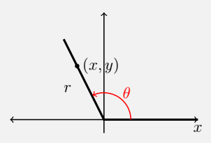
This is all assuming the denominators do not equal zero!
Example
- Suppose the terminal side of \(\theta\), when plotted in standard position, contains the point \(Q(3,-4)\). Find the values of the six circular functions of \(\theta\).
- Suppose \(\theta\) is a Quadrant IV angle with \(\cot(\theta) = -4\). Find the values of the five remaining circular functions of \(\theta\).
Solution
-
Since \(x = 3\) and \(y=-4\), \(r = \sqrt{x^2 + y^2} = \sqrt{(3)^2+(-4)^2} = \sqrt{25} = 5\). The definition above tells us \(\cos(\theta) = \frac{3}{5}\), \(\sin(\theta) = -\frac{4}{5}\), \(\sec(\theta) = \frac{5}{3}\), \(\csc(\theta) = -\frac{5}{4}\), \(\tan(\theta) = -\frac{4}{3}\) and \(\cot(\theta) = - \frac{3}{4}\).
-
In order to use the definitions above, we need to find a point \(Q(x,y)\) which lies on the terminal side of \(\theta\), when \(\theta\) is plotted in standard position. We have that \(\cot(\theta) = -4 = \frac{x}{y}\), and since \(\theta\) is a Quadrant IV angle, we know that only the \(\cos\) and \(\sec\) functions are positive in this quadrant, using the C.A.S.T. method we learned in section unitcircle. Viewing \(-4 = \frac{4}{-1}\), we may choose \(x = 4\) and \(y = -1\) so that \(r = \sqrt{x^2+y^2} = \sqrt{(4)^2 + (-1)^2} = \sqrt{17}\). Using the theorems above once more, we find \(\cos(\theta) = \frac{4}{\sqrt{17}} = \frac{4 \sqrt{17}}{17}\), \(\sin(\theta) =- \frac{1}{\sqrt{17}} = -\frac{\sqrt{17}}{17}\), \(\sec(\theta) = \frac{\sqrt{17}}{4}\), \(\csc(\theta) = - \sqrt{17}\) and \(\tan(\theta) = -\frac{1}{4}\).
Exercises
In Exercises 1 - 20, find the exact value of all six trigonometric functions given angle.
- \(\theta = 0\)
- \(\theta = \dfrac{\pi}{4}\)
- \(\theta = \dfrac{\pi}{3}\)
- \(\theta = \dfrac{\pi}{2}\)
- \(\theta = \dfrac{2\pi}{3}\)
- \(\theta = \dfrac{3\pi}{4}\)
- \(\theta = \pi\)
- \(\theta = \dfrac{7\pi}{6}\)
- \(\theta = \dfrac{5\pi}{4}\)
- \(\theta = \dfrac{4\pi}{3}\)
- \(\theta = \dfrac{3\pi}{2}\)
- \(\theta = \dfrac{5\pi}{3}\)
- \(\theta = \dfrac{7\pi}{4}\)
- \(\theta = \dfrac{23\pi}{6}\)
- \(\theta = -\dfrac{13\pi}{2}\)
- \(\theta = -\dfrac{43\pi}{6}\)
- \(\theta = -\dfrac{3\pi}{4}\)
- \(\theta = -\dfrac{\pi}{6}\)
- \(\theta = \dfrac{10\pi}{3}\)
- \(\theta = 117\pi\)
In Exercises 21 - 30, use the results developed throughout the section to find the requested value.
- If \(\sin(\theta) = -\dfrac{7}{25}\) with \(\theta\) in Quadrant IV, what is \(\cos(\theta)\)?
- If \(\cos(\theta) = \dfrac{4}{9}\) with \(\theta\) in Quadrant I, what is \(\sin(\theta)\)?
- If \(\sin(\theta) = \dfrac{5}{13}\) with \(\theta\) in Quadrant II, what is \(\cos(\theta)\)?
- If \(\cos(\theta) = -\dfrac{2}{11}\) with \(\theta\) in Quadrant III, what is \(\sin(\theta)\)?
- If \(\sin(\theta) = -\dfrac{2}{3}\) with \(\theta\) in Quadrant III, what is \(\cos(\theta)\)?
- If \(\cos(\theta) = \dfrac{28}{53}\) with \(\theta\) in Quadrant IV, what is \(\sin(\theta)\)?
- If \(\sin(\theta) = \dfrac{2\sqrt{5}}{5}\) and \(\dfrac{\pi}{2} < \theta < \pi\), what is \(\cos(\theta)\)?
- If \(\cos(\theta) = \dfrac{\sqrt{10}}{10}\) and \(2\pi < \theta < \dfrac{5\pi}{2}\), what is \(\sin(\theta)\)?
- If \(\sin(\theta) = -0.42\) and \(\pi < \theta < \dfrac{3\pi}{2}\), what is \(\cos(\theta)\)?
- If \(\cos(\theta) = -0.98\) and \(\dfrac{\pi}{2} < \theta < \pi\), what is \(\sin(\theta)\)?
In Exercises 31 - 39, find all of the angles which satisfy the given equation.
- \(\sin(\theta) = \dfrac{1}{2}\)
- \(\cos(\theta) = -\dfrac{\sqrt{3}}{2}\)
- \(\sin(\theta) = 0\)
- \(\cos(\theta) = \dfrac{\sqrt{2}}{2}\)
- \(\sin(\theta) = \dfrac{\sqrt{3}}{2}\)
- \(\cos(\theta) = -1\)
- \(\sin(\theta) = -1\)
- \(\cos(\theta) = \dfrac{\sqrt{3}}{2}\)
- \(\cos(\theta) = -1.001\)
In Exercises 40 - 48, solve the equation for \(t\).
- \(\cos(t) = 0\)
- \(\sin(t) = -\dfrac{\sqrt{2}}{2}\)
- \(\cos(t) = 3\)
- \(\sin(t) = -\dfrac{1}{2}\)
- \(\cos(t) = \dfrac{1}{2}\)
- \(\sin(t) = -2\)
- \(\cos(t) = 1\)
- \(\sin(t) = 1\)
- \(\cos(t) = -\dfrac{\sqrt{2}}{2}\)